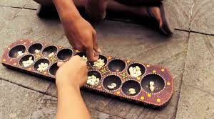

Home
Agama
PKn
Bahasa Indonesia
Ini adalah halaman PKn
Dalam pelajaran Pendidikan Pancasila saya belajar tentang Indonesia sebagai dasar negara, kearifan lokal, budaya, tradisi, dll. Sekarang kami sedang belajar tentang kearifan lokal dan kami membuat board games sebagai AP semester 2.
